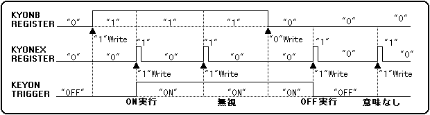
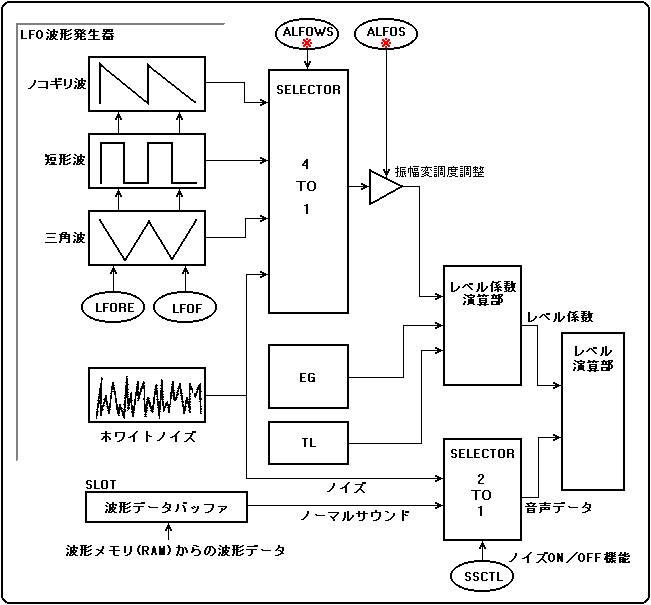
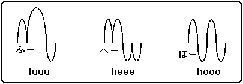
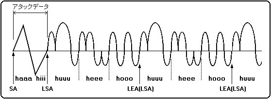
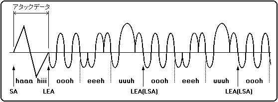
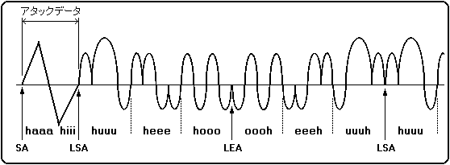

★HARDWARE Manual
★SCSPユーザーズマニュアル
★HARDWARE Manual
★SCSPユーザーズマニュアル
"KYONEX"は、"1B"をライトした後に"0B"をライトする必要はありません。
どのスロットで"1B"にしても全てのスロットに対して作用しますので、特定の
スロットで"1B"にしなければならないということはありません。
図4.2 KEY_ONおよびKEY_OFF機能


図4.4 ループの種類
┌────┬────┬────┬────┬────┐ │ｈａａａ│ｈｉｉｉ│ｈｕｕｕ│ｈｅｅｅ│ｈｏｏｏ│ └────┴────┴────┴────┴────┘ ↑ アタックデータ ↑ ループデータ ↑ ＳＡ ＬＳＡ ＬＥＡ
●ノーマルループの場合 ┌────┬────┬────┬────┬────┬────┬────┬────┬─── │ｈａａａ│ｈｉｉｉ│ｈｕｕｕ│ｈｅｅｅ│ｈｏｏｏ│ｈｕｕｕ│ｈｅｅｅ│ｈｏｏｏ│ｈｕｕ └────┴────┴────┴────┴────┴────┴────┴────┴─── ↑ ↑ ↑ ↑ ＳＡ ＬＳＡ ＬＥＡ（ＬＳＡ） ＬＥＡ（ＬＳＡ） ●リバースループの場合 ┌────┬────┬────┬────┬────┬────┬────┬────┬─── │ｈａａａ│ｈｉｉｉ│ｏｏｏｈ│ｅｅｅｈ│ｕｕｕｈ│ｏｏｏｈ│ｅｅｅｈ│ｕｕｕｈ│ｏｏｏ └────┴────┴────┴────┴────┴────┴────┴────┴─── ↑ ↑ ↑ ↑ ＳＡ ＬＥＡ ＬＳＡ（ＬＥＡ） ＬＳＡ（ＬＥＡ） ●オルタネーティブループの場合 ┌────┬────┬────┬────┬────┬────┬────┬────┬─── │ｈａａａ│ｈｉｉｉ│ｈｕｕｕ│ｈｅｅｅ│ｈｏｏｏ│ｏｏｏｈ│ｅｅｅｈ│ｕｕｕｈ│ｈｕｕ └────┴────┴────┴────┴────┴────┴────┴────┴─── ↑ ↑ ↑ ↑ ＳＡ ＬＳＡ ＬＥＡ ＬＥＡ




★HARDWARE Manual
★SCSPユーザーズマニュアル